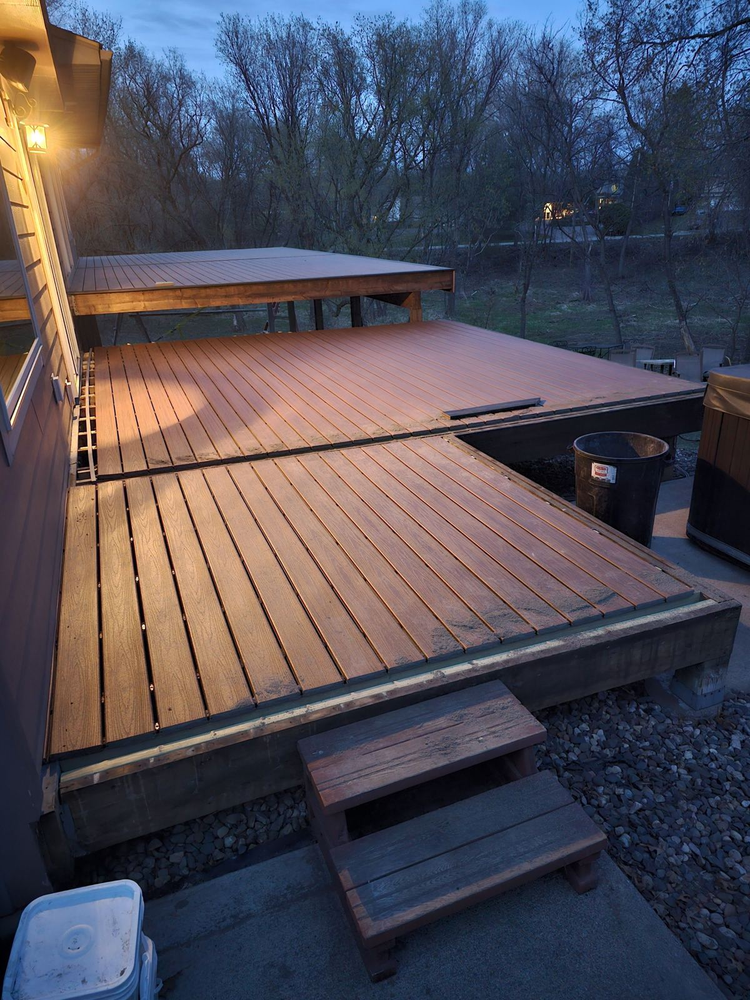

Our Work
Carpentry & remodeling projects
Real projects from homes around western Wisconsin, organized by project type. Tap any photo for a closer look.
Decks & Porches
Railings, stairs, covered porches and decks framed for Wisconsin winters, with the structure underneath built as carefully as the boards on top.
Baths & Tile
Showers, tile floors, vanities and full bathroom remodels, with the work behind the walls done right before the finish goes on.
Basements
Unfinished basements turned into rooms your family actually uses.
Additions & Exteriors
Additions, siding, entry doors and outdoor living spaces tied in seamlessly with the house.
Garages & Outbuildings
Garages, sheds and workshops framed square and built strong, from slab to shingles.
Thinking about a project like these?
We'll come out, look closely at the space, and give you an honest, written quote.
Get Your Free Estimate